Rear Suspension
Knuckle/Hub Bearing Unit ReplacementKnuckle/Hub Bearing Unit (Disc Brake Type):
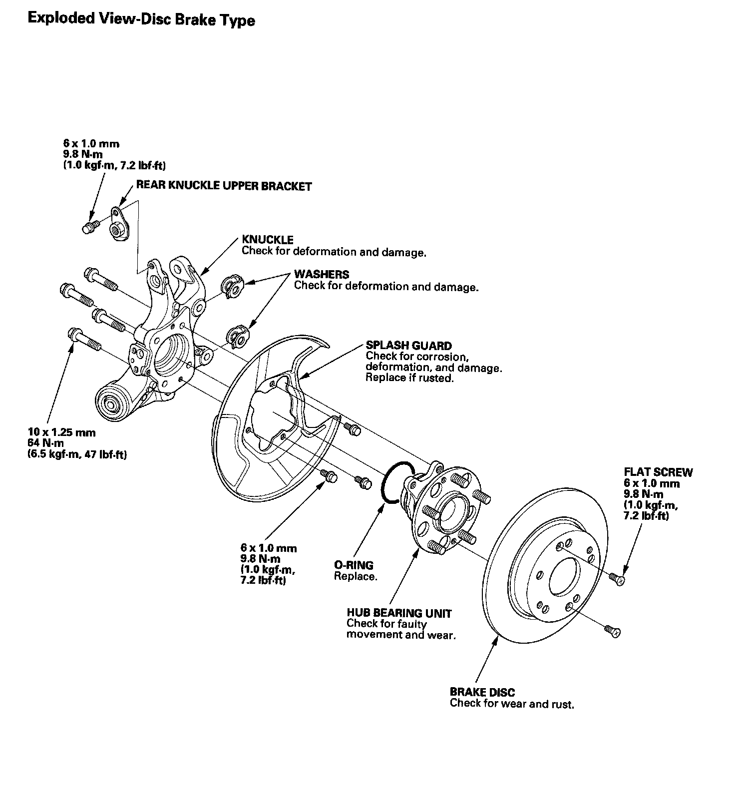
Knuckle/Hub Bearing Unit (Drum Brake Type):
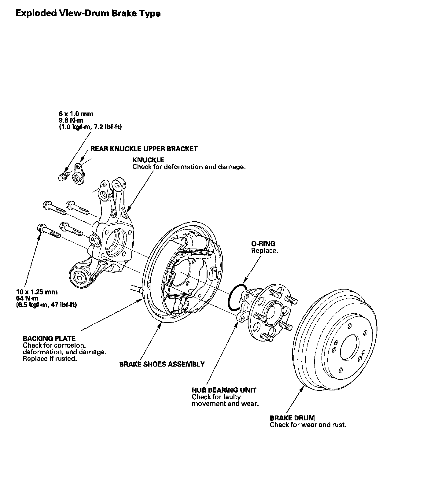
Hub Bearing Unit Replacement-Disc Brake Type
1. Raise the rear of the vehicle, and support it with safety stands in the proper locations.
2. Remove the wheel nuts (A) and the rear wheel.
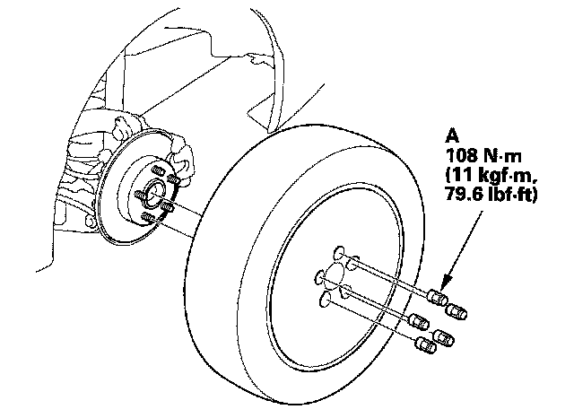
3. Remove the brake hose bracket mounting bolt (A) from the knuckle.
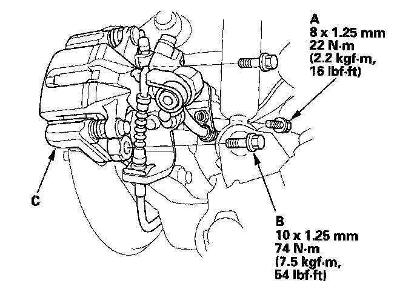
4. Remove the brake caliper bracket mounting bolts (B), and remove the caliper assembly (C) from the knuckle. To prevent damage to the caliper assembly or brake hose, use a short piece of wire to hang the caliper assembly from the undercarriage. Do not twist the brake hose excessively.
5. Remove the two washers (A).
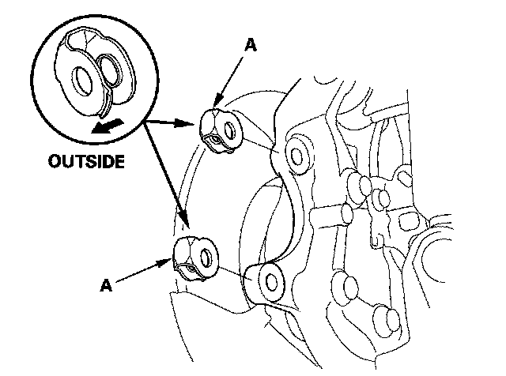
6. Remove the 6 mm brake disc retaining screws (A).
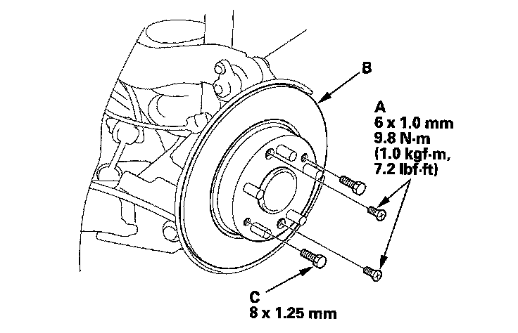
7. Remove the brake disc (B), from the hub bearing unit.
NOTE: If the brake disc has clung to the hub bearing unit. Screw two 8 x 1.25 mm bolts (C) into the brake disc to push it away from the hub bearing unit. Turn each bolt 90° at a time to prevent cocking the brake disc.
8. Remove the hub bearing unit (A) and the O-ring (B).
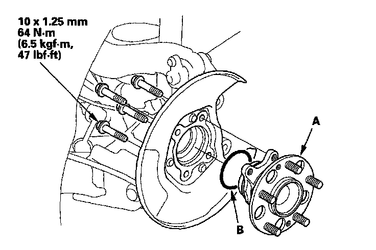
9. Check the hub bearing unit for damage and cracks.
10. Install the hub bearing unit in the reverse order of removal, and note these items:
^ Use a new O-ring during reassembly.
^ Tighten all mounting hardware to the specified torque values.
^ Before installing the brake disc, Clean the matching surface of the hub bearing unit and inside of the brake disc.
^ Before installing the wheel, clean the mating surface of the brake disc and the inside of the wheel.
^ Check the wheel alignment, and adjust it if necessary.
Hub Bearing Unit Replacement-Drum Brake Type
1. Raise the rear of the vehicle, and support it with safety stands in the proper locations.
2. Remove the wheel nuts (A) and the rear wheel.
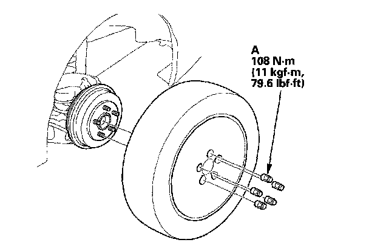
3. Release the parking brake, and remove the brake drum (A) from the hub bearing unit.
NOTE:
^ If necessary, turn the adjuster bolt (B) with a flat tip screwdriver until the shoes become loose.
^ If the brake drum has clung to the hub bearing unit. Screw two 8 x 1.25 mm bolts (C) into the brake drum to push it away from the hub bearing unit. Turn each bolt 90° at a time to prevent cocking the brake drum.
^ After installation, press the brake pedal several times to make sure the brakes work and self adjust the brake shoes.
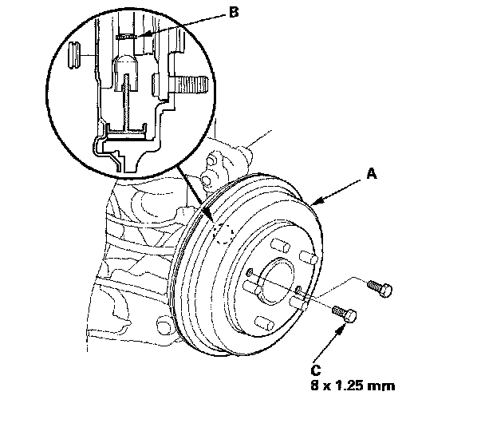
4. Remove the hub bearing unit (A) and the O-ring (B).
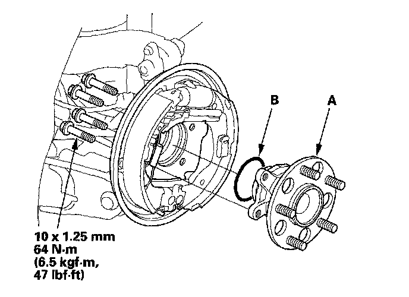
5. Check the hub bearing unit for damage and cracks.
6. Install the hub bearing unit in the reverse order of removal, and note these items:
^ Use a new O-ring during reassembly.
^ Tighten all mounting hardware to the specified torque values.
^ Before installing the brake drum, clean the matching surface of the hub bearing unit and inside of the brake drum.
^ Before installing the wheel, clean the mating surface of the brake drum and the inside of the wheel.
^ Check the wheel alignment, and adjust it if necessary.
Knuckle Replacement-Disc Brake Type
1. Remove the hub bearing unit.
2. Remove the splash guard (A).
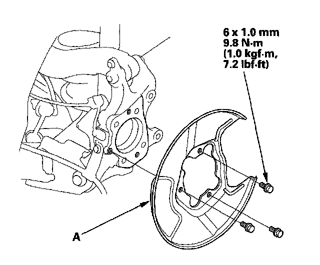
3. Remove the wheel sensor (A), and the brake hose mounting bracket (B) from the knuckle (C). Do not disconnect the wheel sensor connector.
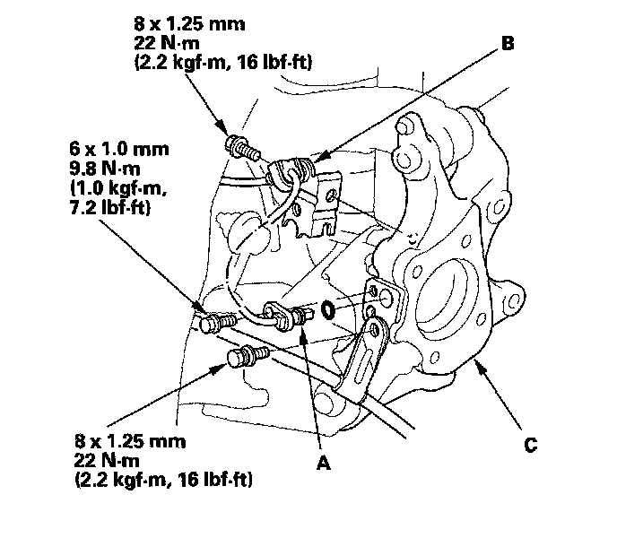
4. Place a floor jack under the trailing arm to support it.
NOTE: Do not place the jack against the plate section of the lower arm. Be careful not to damage any suspension components.
5. Remove the upper arm mounting bolt (A), and disconnect the upper arm (B) from the knuckle.
NOTE: Use the new upper arm mounting bolt during reassembly.
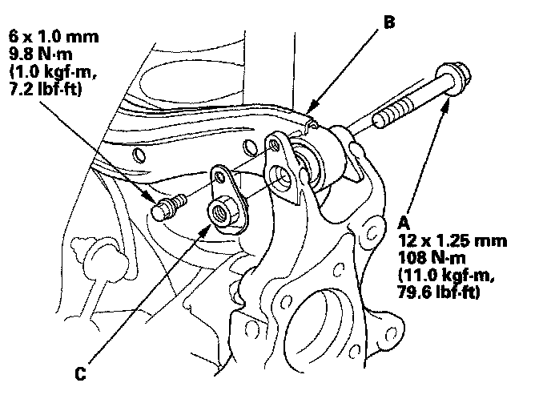
6. Remove the rear knuckle upper bracket (C).
7. Mark the cam positions of the adjusting bolt (A) and the adjusting cam (B), then remove the self-locking nut (C), the adjusting cam, and the adjusting bolt. Discard the self-locking nut.
NOTE: Use a new self-locking nut during reassembly.
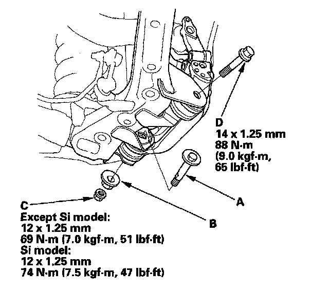
8. Remove the flange bolt (D) and remove the knuckle.
NOTE: Use a new flange bolt during reassembly.
9. Install the knuckle in the reverse order of removal, and note these items:
^ First install all the suspension components, and lightly tighten the bolts and nuts, then place a floor jack under the lower arm, and raise the suspension to load it with the vehicle's weight before fully tightening the bolts and nuts to the specified torque values.
^ Align the cam positions of the adjusting bolt and the adjusting cam with the marked positions when tightening.
^ Before installing the brake disc, clean the mating surface of the hub bearing unit and the inside of the brake disc.
^ Before installing the wheel, clean the mating surface of the brake disc and the inside of the wheel.
^ Check the wheel alignment, and adjust it if necessary.
Knuckle Replacement-Drum Brake Type
1. Remove the hub bearing unit.
2. Disconnect the brake line (A) from the wheel cylinder (B). Remove the rear brake assembly (C) from the knuckle.
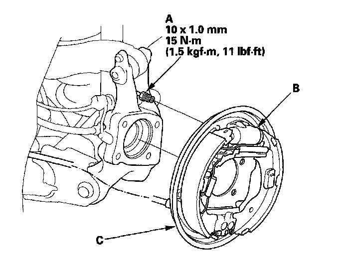
3. Remove the wheel sensor (A), and the brake hose mounting bracket (B) from the knuckle (C). Do not disconnect the wheel sensor connector.
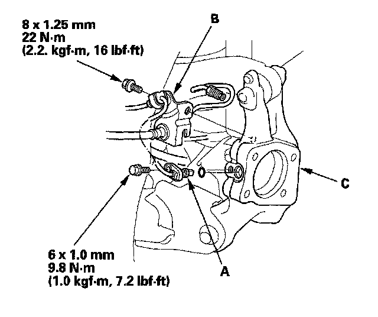
4. Place a floor jack under the trailing arm to support it.
NOTE: Do not place the jack against the plate section of the lower arm. Be careful not to damage any suspension components.
5. Remove the upper arm mounting bolt (A), and disconnect the upper arm (B) from the knuckle.
NOTE: Use a new upper arm mounting bolt during reassembly.
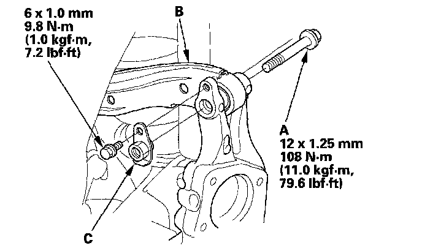
6. Remove the rear knuckle upper bracket (C).
7. Mark the cam positions of the adjusting bolt (A) and the adjusting cam (B), then remove the self-locking nut (C), the adjusting cam, and the adjusting bolt. Discard the self-locking nut.
NOTE: Use a new self-locking nut during reassembly.
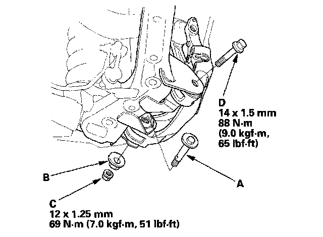
8. Remove the flange bolt (D) and remove the knuckle.
NOTE: Use a new flange bolt during reassembly.
9. Install the knuckle in the reverse order of removal, and note these items:
^ First install all the suspension components, and lightly tighten the bolts and nuts, then place a floor jack under the lower arm, and raise the suspension to load it with the vehicle's weight before fully tightening the bolts and nuts to the specified torque values.
^ Align the cam positions of the adjusting bolt and the adjusting cam with the marked positions when tightening.
^ Before installing the brake drum, clean the mating surface of the hub bearing unit and the inside of the brake drum.
^ Before installing the wheel, clean the mating surface of the brake drum and the inside of the wheel.
^ Fill the master cylinder reservoir to the MAX (upper) level line, and bleed the brake system.
^ Check for a leak at the brake line to the wheel cylinder, and retighten it if necessary. Check the wheel alignment, and adjust it if necessary.